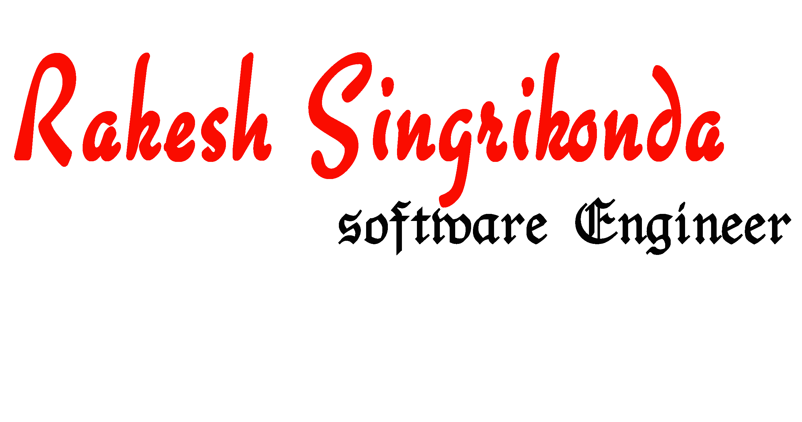
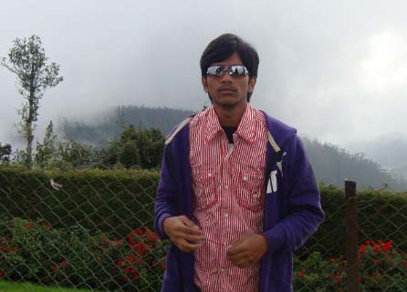

To Skip Presentation Click Here.
Its me : Rakesh

 +91 88924 30090 || +91 99088 43681
+91 88924 30090 || +91 99088 43681
rakesh.s1990@gmail.com
CAREER OBJECTIVE
Seeking a position where excellent technical skills coupled with great communication and interpersonal skills are needed, where idea appreciation exists, creativity is expected and is encouraged to grow with the organization’s vision and mission. In the next five years I foresee myself as a project manager.
PROFESSIONAL SUMMARY
Strong understanding of commercial and open source Operating Systems
Greater understanding of
Web Technologies,
Computer Facilities and Network Infrastructure within an
enterprise.
Exposure to My SQL & Oracle databases
Certified Security Professional from International Information Security Consortium
Volunteer at SwechaFSMI Free software moment of india Hyderabad.
Interested to
Generate new ideas
for streamlining the process of
Software Development
The only Job You start at the Top is Digging a HOLE.
EDUCATIONAL QUALIFICATIONS
Bachelor of Technology
In Information Technology from JNTU,Hyderabad
(2008-2013) with 74.19%
Intermediate (+2)
Narayana Junior college, Hyderabad
(2006-2008) with 91.30%
Secondary School Certificate
National High school,Hanamkonda,Andhra Pradesh
(2006-2006) with 86.00%
PROJECTS
Client: Gmore World, Dubai - UAE
Platform: PHP, MySql, Apache, Java Scripts, HTML, CSS
Job Responsibilities
* Detailed application specific discussion with the client
* Clarified what actions the program is intended to perform
* Designed a layout using GUI tools that replicates the client requirements
* Combined all elements of the application design and tested it
* Tested with sample data-sets to check that output from the program works as intended
* Conducted testing and installed the program into production
* Reacted to problems and corrected the application as necessary
* Worked accordingly to provide application as multiple browser compatibility and rectified the errors
* Adapted the program to new requirements, as necessary
* Volunteered to perform knowledge-transfer and supported the client through the deployment and maintenance phase
PROJECTS
Client: Shadidiary, Bangalore
Platform: PHP, MySql, Apache, Java Scripts, HTML, CSS, reverse-engineering, scripting, scratch coding, malware analyzing tools
Job Responsibilities
* Ensuring the content is current
* Testing and fixing any functionality issues
* Regularly measuring and analyzing the statistics, and by using the information to improve and
Maximize performance of application
* Analyzing and examining malicious software, such as bots, worms, and Trojans to understand the nature of their threat
* Reverse-engineering the code and ensuring the code is safe
* Volunteered to perform knowledge-transfer and supported the client through the deployment and maintenance phase
PROJECTS
Title:HUMAN RESOURCE MANAGEMENT SYSTEM
Company:Sify Software Limited, Hyderabad
Platform: Lamp Services, Java Scripts, HTML
Functional benefits
*Human Resource Management System aimed to provide web based HR management tool for all types of organizations. This project includes employee personal and professional details tracking system, providing soft skills related training center for all employees, working with technical team to recruit fresher’s and technical professionals in to the projects, Tracking the software project related management and provide best output to the customers.
Job Responsibilities
*Time & Attendance, Travel, Performance management system,Benefits administration, Payroll integration,Recruitment, Additional features for employee benefits
PROJECTS
Title: PUZZLE BASED DEFENSE STRATEGY
Platform: Core Java, Java Servlets
Functional benefits
*This project provides security to the data that is transmitted over the internet. Four modules devised as part of the project typically provides a puzzle based defense strategy that will secure or create a layer for the data sent over internet. Four modules devised as part of the project includes Open loop, Closed Loop, consideration of distributed attacks in turn comprising of known and unknown collisions.
Job Responsibilities
*Lead to the team of 5 associates in the project. I was instrumental in information gathering, project execution assessment and delivery, testing.
PROJECTS
Title: MINIMIZING ADDITIVE DISTORTION IN STEGANOGRAPHY
Platform: Core Java, Java Servlets
Functional benefits
*This project is mainly concerned about minimizing additive distortion in images that are produced; we had made 5 modules & a graphical user interactive system that a moderate system user can also operate the application.
Job Responsibilities
*Was the lead to the team of 5 people in the project. Am responsible for allocating work among the team. Organized the data provided them, identified what all required, finally we had undergone design, testing and deployed the project.
PROJECTS
Title: MINIMIZING ADDITIVE DISTORTION IN STEGANOGRAPHY
Platform: Core Java, Java Servlets
Functional benefits
*This project is mainly concerned about minimizing additive distortion in images that are produced; we had made 5 modules & a graphical user interactive system that a moderate system user can also operate the application.
Job Responsibilities
*Was the lead to the team of 5 people in the project. Am responsible for allocating work among the team. Organized the data provided them, identified what all required, finally we had undergone design, testing and deployed the project.
PROJECTS
Title: COLLEGE RESULTS PORTAL
Platform: PHP, HTML, and My SQL
Functional benefits
*This project mainly deals with handling student’s results i.e., from first semester to the last semester and will also be capable of providing aggregate performance of every individual. And the other module that handles the instant results from JNTU, offsets the load from JNTU Server's onto the KITS(S) college managed servers.Configured and documented the whole process of development along with providing training to the stakeholders who will be maintaining the results server from the college
PROJECTS
Title: DEVELOPED WEBSITES FOR COLLEGE FESTS
Platform: HTML, CMS & Google Docs
Functional benefits
*This project developed to advertise or to focus the National level Tech fests that are (ACUMEN11 organized by Dept of IT & KITSOZEN12 a college fest) celebrated in our college
PROJECTS
Title: SRI RADHA KRISHNA TILES FACTORY
Platform: HTML, xHTML, CSS, JavaScript, JQuery, JSP, PHP
Job Responsibilities
*Conceptualized, designed, developed, and published a web portal to serve as a catalog of products offered by the enterprise, authored content for the website, tested the website for compatibility on multiple internet browsers for breakage, performed Search Engine Optimization
*Negotiated price and terms with the web hosting company. Sought administrative support and transferred knowledge from the system administrator of the web hosting company
*Documented and devised workflow for configuring the product catalog using Drupal Content Management so that an end-user who is not comfortable using complex user interfaces can also maintain the web based catalog with zero dependency on a technical resource
*Configured and deployed various components available within the administrative control panel provided by the web hosting provider
*Volunteered to perform knowledge-transfer and supported the client through the deployment and maintenance phase
INTERESTS
Likes to work with different operating systems & software
INTERESTS
Software Reverse Engineering
INTERESTS
Volunteering for Free and Open Source Software Initiatives
PERSONAL DOSSIER
- name
- Date of birth
- Address
-
-
-
-
-
- mobile
-
-
-
- Rakesh singrikonda
- 25, June 1990
- Bangalore
-
-
-
-
-
- +91 88924 30090
- +91 99088 43681
-
-